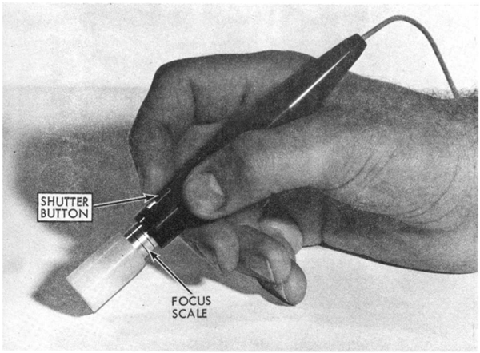
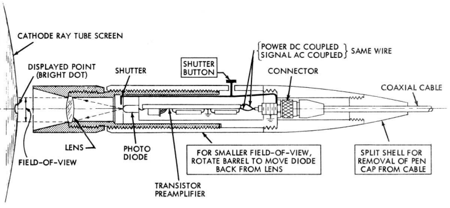
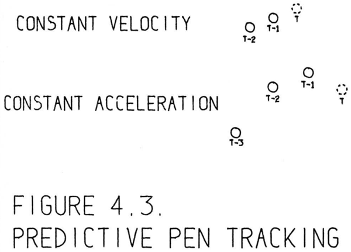
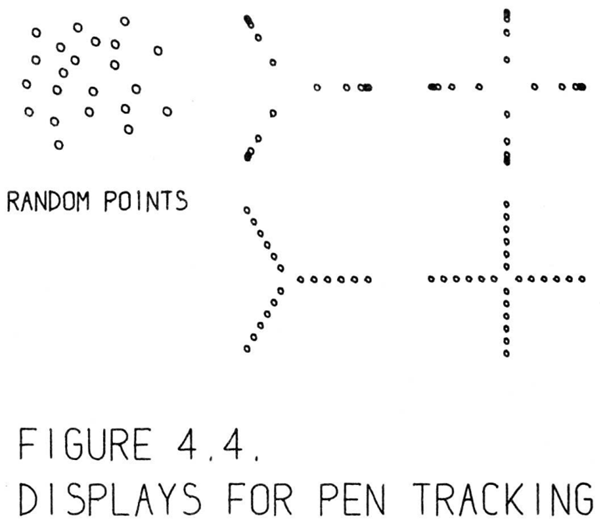
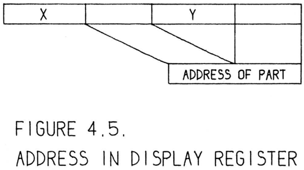
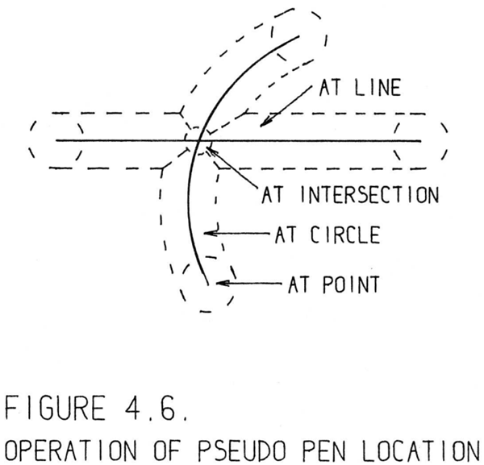

In Sketchpad the light pen is time shared between the functions of coordinate input for positioning picture parts on the drawing and demonstrative
input for pointing to existing picture parts to make changes. Although almost
any kind of coordinate input device could be used instead of the light pen for
positioning, the demonstrative input uses the light pen optics as a sort of analog computer to remove from consideration all but a very few picture parts
which happen to fall within its field of view, saving considerable program
time. Drawing systems using storage display devices of the Memotron type
may not be practical because of the loss of this analog computation feature.
Sketchpadにおいて、ライトペンは、図面上で図形要素を配置するための「座標入力」機能と、既存の図形要素を指し示して変更を加えるための「指示入力」機能の間で、時分割的に使用されます。配置に関してはライトペン以外のほぼあらゆる座標入力デバイスで代用可能ですが、指示入力においては、ライトペンの光学系が一種のアナログコンピュータとして機能します。これにより、視野内に偶然入ったごく少数の図形要素以外を処理対象から除外できるため、プログラムの実行時間を大幅に節約できます。Memotron型のような蓄積型ディスプレイ装置を用いた作図システムでは、こうしたアナログ演算機能が失われてしまうため、実用的ではない可能性があります。
The light pen is a hand held photocell which will report to the computer whenever a spot on the display system falls within its small field of view. The
housing for the photocell is about the size of a fountain pen and is manipulated much as a pen or pencil, hence the name. Many different varieties of
light pens have been built, including large cumbersome ones in the days before miniaturization, to be replaced by transistorized versions, and recently by
fiber optic pens connected by a flexible light pipe to a photocell mounted inside the computer frame. The particular pen used for the Sketchpad system
consists of a photodiode and transistor preamplifier mounted in the pen housing and connected to the computer by a length of small coaxial cable, as shown
ink the photograph of Figure 4.1, and in the drawing of Figure 4.2. It is used
by Sketchpad primarily because its operation is relatively independent of the
distance it is held from the computer display, since it has a cylindrical field of
view
ライトペンは、ディスプレイ上の特定の点がその狭い視野内に入るとコンピュータに信号を送る、手持ち式の光電素子デバイスです。
光電素子を収める筐体は万年筆ほどの大きさで、ペンや鉛筆と同じように操作できることからその名が付けられました。
これまで多種多様なライトペンが開発されてきました。小型化技術が普及する前の大型で扱いにくいものから、トランジスタを使用したものへと変わり、最近では、コンピュータ本体内部に設置された光電素子と柔軟な光ファイバー（ライトパイプ）で接続されたタイプも登場しています。
「Sketchpad」システムで使用されたライトペンは、筐体内にフォトダイオードとトランジスタ・プリアンプを組み込み、細い同軸ケーブルでコンピュータに接続する構造になっています（図4.1の写真および図4.2の図面を参照）。
このペンがSketchpadで採用された主な理由は、円筒状の視野を持つため、コンピュータのディスプレイからどの程度の距離で保持するかという点に操作性が比較的左右されにくいからです。


Since spots on the display system are intensified one after another in time
sequence, whether or not each spot is seen by the pen is individually reported
just after intensification of that spot. The light pen amplifier is designed so
that the pen is sensitive only to the bright blue flash of the first intensification
of a display spot and not to the dim yellow afterglow. The amplifier output is
strobed only when a display spot has been intensified to minimize room light
pickup. Although some computers require an interrogation of a pen flip-flop to find out if a spot was seen, TX-2 uses the interruption of a sequence change
to indicate this fact∗
. Thus if a series of points are displayed on the scope by
a set of data transfer instructions, and one of these points falls under the field
of view of the pen, subsequent instructions will be performed in the light pen
sequence rather than in the display sequence until the light pen sequence is
finished. Thus it is unnecessary to interrogate the pen specifically for each
display spot, the interruption of sequence changing serving automatic notification that a spot was seen. For pen tracking, where a program branch is made
for every spot displayed, interruption by the pen requires more program instructions than would a specific bit testing instruction, but for the demonstrative use of the pen where any spot of the background display may fall within
the pen’s field of view but is relatively unlikely to do so, the interruption is a
real advantage.
表示システム上の各点は時系列に沿って次々と輝度を高めて表示（輝点化）されるため、各点がペンによって捕捉されたか否かは、その点が輝点化した直後に個別に報告されます。ライトペン用アンプは、表示点が最初に輝点化した際の明るい青色の閃光には反応し、その後の暗い黄色の残光には反応しないような特性を持つよう設計されています。また、室内光の影響を最小限に抑えるため、アンプの出力は表示点が輝点化されている間のみ有効（ストローブ）となります。点が捕捉されたかどうかを確認する際、特定のコンピュータではペンに関連するフリップフロップの状態をプログラムで読み取る（問い合わせる）必要がありますが、TX-2ではシーケンス切り替えに伴う割り込みを利用してこの事実を通知します。したがって、一連のデータ転送命令によってスコープ上に複数の点が順次表示される際、そのうちの1点がペンの視野に入ると、それ以降の命令は通常の表示シーケンスではなくライトペン・シーケンスで実行されることになります（ライトペン・シーケンスが終了するまで）。このように、表示点ごとにペンへ個別に問い合わせを行う必要はなく、シーケンス切り替えの割り込みが、点が捕捉されたことの自動的な通知として機能します。表示される点ごとにプログラムの分岐が発生するようなペン・トラッキング（追跡）処理においては、特定のビットをテストする命令を使う場合に比べて、ペンによる割り込み処理はより多くのプログラム命令を必要とします。しかし、背景となる表示上の任意の点がペンの視野に入る可能性はあるものの、実際にそうなる頻度は比較的低いという一般的な用途（デモンストレーション等）においては、この割り込み機能は大きな利点となります。
The light pen and its connecting cable report to the computer immediately after any display spot has been shown which lies within the pen’s view. By
displaying a cross-like pattern and noticing which spots fall within the light
pen’s view, the computer can follow the motions of the light pen around the
screen. In orderto follow normal motions of a hand held light pen I have found
it necessary to redisplay the tracking cross about 100 times per second, taking 1
millisecond per display. When the cross is being “dragged” across the screen at
the maximum speed I have achieved, successive crosses are displayed about
0.2 inches apart and the maximum pen speed is thus 20 inches per second
which has proven quite enough for the experiments conducted. If the light
pen is moved faster than that, the tracking cross will fall entirely outside of its
field of view and tracking will be lost. I use the loss of tracking as the so-called
termination signal for all pen tracking operations
ライトペンとその接続ケーブルは、ペンの検知範囲内にある表示上の点が描画されると直ちに、その情報をコンピュータに伝達します。十字形のパターンを表示し、どの点がライトペンの検知範囲に入るかを認識することで、コンピュータは画面上でのライトペンの動きを追跡できます。手持ちのライトペンの通常の動きを追跡するには、追跡用の十字マークを1秒間に約100回再表示する必要があり、1回の表示に1ミリ秒を要することが分かりました。私が実現した最高速度で十字マークを画面上で「ドラッグ」する場合、連続する十字マークは約0.2インチの間隔で表示されます。したがって、ペンの最高速度は毎秒20インチとなり、これは実施した実験において十分な速度であることが確認されました。もしライトペンをそれ以上の速さで動かすと、追跡用の十字マークが検知範囲から完全に外れてしまい、追跡が途切れてしまいます。私は、この追跡の途切れを、すべてのペン追跡操作におけるいわゆる終了信号として利用しています。
Early in the system development some effort was spent trying to reduce the
computer time spent in pen tracking. It was attempted to have the computer
predict the location of the pen based on its past locations so that a longer time
might elapse between display of tracking crosses. The assumptions of constant
velocity,
システム開発の初期段階では、ペン追跡に費やすコンピュータ時間を短縮するためにいくつかの努力がなされました。コンピュータが過去のペンの位置に基づいてペンの位置を予測し、追跡十字の表示間隔を長くできるように試みました。一定速度の仮定、
\[
\begin{align}
X_t &= (X_{t-1}-X_{t-2})+X_{t-1} \\
\\
Y_t &= (Y_{t-1}-Y_{t-2})+Y_{t-1}
\end{align}
\tag{4-1}
\]
and constant acceleration,
そして一定の加速度、
\[
\begin{align}
X_t &= 3(X_{t-1}-X_{t-2})+X_{t-3} \\
\\
Y_t &= 3(Y_{t-1}-Y_{t-2})+Y_{t-3}
\end{align}
\tag{4-2}
\]
where successive pen positions are denoted by subscripts, were tried. A pictorial representation of these assumptions is shown in Figure 4.3.
（そこでは、連続するペンの位置が添字で表される) が試みられた。これらの仮定を図4.3に示す。

An attempt was made to combine various types of prediction according to the speed of motion of the pen, but all such efforts met with difficult stability problems and were interfering with more important parts of the research.
Therefore, I decided to accept the ten per cent of time lost to tracking in order
to proceed to more interesting things. Other workers, notably Rolland Silvers
formerly of Bolt, Beranek and Newman, report better success with predictive
tracking giving numbers like 3% loss.
ペンの移動速度に応じて数種類の予測手法を組み合わせる試みもなされましたが、いずれも安定性の確保という困難な問題に直面し、研究のより重要な部分の妨げとなってしまいました。
そこで私は、より興味深い課題へと進むため、トラッキングに伴う10%の時間の損失を許容することにしました。なお、他の研究者（特にBolt, Beranek and Newman社の元社員であるRolland Silvers氏など）からは、予測トラッキングを用いて損失を3%程度に抑えるなど、より良好な成果が得られたとの報告もなされています。
Different methods of establishing the exact location of the light pen have
been tried using many different shapes of display. For example, the displays
shown in Figure 4.4 all seem to be about the same as far as time taken to establish pen position and accuracy. As far as I know, no one has taken into account
the motion of the pen during the tracking display period. I use the logarithmic
scan with four arms.
ライトペンの正確な位置を特定する様々な手法が、多種多様な形状のディスプレイを用いて試みられてきました。例えば、図4.4に示すディスプレイは、ペンの位置特定にかかる時間や精度の点では、いずれもほぼ同等であるように見受けられます。私の知る限り、トラッキング表示期間中におけるペンの動きを考慮に入れた例はこれまでありません。私は、4本のアームを持つ対数走査（logarithmic scan）を用いています。

To initially establish pen tracking the Sketchpad user must inform the computer of an initial pen location. This has come to be known as “inking-up” and
is done by “touching” any existing line or spot on the display whereupon the
tracking cross appears. If no picture has yet been drawn, the letters INK are
always displayed for this purpose.
Sketchpadでペン・トラッキング（ペンの位置追跡）を開始するには、ユーザーがペンのおおよその位置をコンピュータに知らせる必要があります。この操作は「インキング・アップ（inking-up）」と呼ばれ、ディスプレイ上の既存の線や点にペンを「タッチ」することで行われます。タッチすると、トラッキング用の十字マークが表示されます。まだ何も描画されていない場合は、この操作のために「INK」という文字が常に表示されています。
During the remaining 90% of the time that the light pen and display system
are free from the tracking chore, spots are very rapidly displayed to exhibit the
drawing being built, and thus the lines and circles of the drawing appear. The light pen is sensitive to these spots and reports any which fall within its field
of view by thek interruption of a sequence change before another spot can be
shown. The table within the computer memory which holds the coordinates
of the spots also contains a tag on each one as shown in Figure 4.5 so that the
picture part to which this spot belongs may be identified if the spot should be
seen by the pen.
ライトペンとディスプレイ・システムがトラッキング（追跡）処理を行っていない残りの90%の時間には、作成中の図形を表示するために光点が極めて高速で描画され、それによって図形の線や円が視覚的に構成されます。ライトペンはこれらの光点に反応し、ペンが捉えた範囲（視野）内に光点が入ると、次の光点が表示される前に割り込み信号を送ってその旨をシステムに通知します。コンピュータ・メモリ内の光点座標を保持するテーブルには、図4.5に示すように各光点にタグ情報も付加されています。これにより、ペンが特定の光点を捉えた際に、その光点が図形のどの部分に属しているかを識別できるようになっています。

A table of all such picture parts which fall within the light pen’s field of
view is assembled during one complete display cycle. At the end of a display cycle this table contains all the picture parts that could even remotely be
considered as being “aimed at.” During the next display cycle a new table
is assembled which at the end of that cycle will replace the one then in use.
Thus, two storage spaces are provided, one for assembling a complete table of
display parts seen, the other for holding the complete table from the last display cycle so that the aiming computation described below in the sections on
demonstrative language and pseudo pen location may avoid using a partially
complete table. Note that since the display of the TX-2 is independent of the
computations going on, the aiming computation may occur in the middle of a
display cycle.
1回の完全な表示サイクル中に、ライトペンの視野内にあるすべての図形要素をまとめた表が作成されます。表示サイクルが終了する時点で、この表には「狙われた」とみなされる可能性が少しでもある図形要素がすべて含まれています。次の表示サイクルでは新たな表が作成され、そのサイクルの終了時に、それまで使用されていた表と置き換えられます。このように2つの記憶領域が用意されます。一方は、視野内の表示要素を網羅した表を作成するための領域であり、もう一方は、前回の表示サイクルで作成された完全な表を保持するための領域です。後者の表を保持するのは、「指示言語（demonstrative language）」や「擬似ペン位置（pseudo pen location）」に関する節で後述する「狙い」の計算を行う際、作成途中の不完全な表が使用されるのを避けるためです。なお、TX-2の表示処理は実行中の計算処理とは独立して行われるため、「狙い」の計算は表示サイクルの途中で実行される場合もあります。
Due to the relatively long time that a complete display cycle for a complicated drawing may take, the aiming computation, by using information from
the previous complete display cycle, took excessive time to “become aware”
of picture parts newly aimed at by the pen. Therefore, I require that any display part seen by the light pen which is not yet in the table being built for
the current display cycle be put not only in that table, but also in the table for
the previous display cycle if not already there. This speeds up the process of
locking onto elements ofk the drawing. Similarly, the information from a previous display cycle may contain many previously seen drawing parts which
are not currently within the light pen’s field of view, especially if the light pen has moved an appreciable distance since the last complete display cycle. One
might attempt to detect large pen displacements during a display cycle and
indicate that the old light pen information is too obsolete to use if such displacements occur. However, I have often found it handy to slide appreciable
distances along a line or curve, in which case the light pen information is not
made entirely obsolete. Therefore, no such obsolescense-by-displacement routine has been incorporated into the Sketchpad system.
複雑な図形の完全な表示サイクルには比較的長い時間がかかるため、前回の表示サイクルの情報を使用する照準計算では、ペンが新たに対象とした図形要素を「認識」するまでに過大な時間を要していました。そこで私は、ライトペンが捉えた表示要素のうち、現在の表示サイクル用に作成中のテーブルにまだ含まれていないものについては、そのテーブルに追加するだけでなく、もし前回の表示サイクルのテーブルに存在しない場合はそこにも追加するようにしました。これにより、図形要素を捕捉する処理が高速化されます。同様に、前回の表示サイクルの情報には、現在はライトペンの視野内にない図形要素が多く含まれている可能性があります。特に、前回の完全な表示サイクルからライトペンがかなりの距離を移動している場合はなおさらです。表示サイクル中にペンの大きな移動を検出し、そのような移動が発生した場合には、古いライトペン情報が使用するには古すぎると判断するような仕組みを導入することも考えられます。しかし、直線や曲線に沿ってかなりの距離をペンで滑らせる操作は便利であることが多々あり、その場合、ライトペン情報が完全に無効になるわけではありません。そのため、Sketchpadシステムには、移動による情報の無効化を判定するようなルーチンは組み込まれていません。
The table of picture parts falling within the field of view of the light pen, assembled during a complete display cycle, contains all the picture parts which
might form the object of a statement of the type:
完全な表示サイクル中に作成される、ライトペンの視野内に入る図形要素の表には、次のような形式のステートメントの対象となり得るすべての図形要素が含まれています。
\[
\text{apply function F to _______.}
\]
e.g. erase this line (circle, etc.). Since the one half inch diameter field of view
of the light pen is relatively large with respect to the precision with which it
may be manipulated by the user and located by the computer, the Sketchpad
system will reject any such possible demonstrative object which is further from
the center of the light pen than some small minimum distance; about 1/8 inch
was found to be suitable. Although it is easy to compute the distance from
the center of the light pen field to a line segment or circle arc, it is not possible
to computek the distance from the light pen field center to a piece of text or a complicated symbol represented as an instance. For every kind of picture part
some method must be provided for computing its distance from the light pen
center or indicating that this computation cannot be made.
例えば、「この線（円など）を消去する」といった操作の場合です。ライトペンの視野（直径0.5インチ）は、ユーザーによる操作やコンピュータによる位置特定に伴う精度に比べて比較的大きいため、Sketchpadシステムは、ライトペンの中心からある最小距離（約1/8インチが適切と判明しました）以上離れた位置にある対象物については、指示の対象として受け付けません。ライトペンの視野中心から線分や円弧までの距離を計算することは容易ですが、テキストやインスタンスとして表現された複雑なシンボルまでの距離を計算することは不可能です。したがって、あらゆる種類の図形要素について、ライトペンの中心からの距離を計算する手法を用意するか、あるいは計算不可能であることを示す仕組みを設ける必要があります。
The distance from an object seen by the light pen to the center of the light
pen field is used to decrease the size of the light pen field for aiming purposes. A light pen with two concentric fields of view, a small inner one for
demonstrative purposes, and a larger outer one for tracking would make this
computation unnecessary and would give better discrimination between objects for which no distance computation exists. Lack of this discrimination is
now a problem. Design of such a pen is easy, and consideration of its development for any future large scale use of engineering drawing programs should
be given serious consideration.
ライトペンが捉えた対象物からその検出領域の中心までの距離は、照準を合わせるために検出領域のサイズを縮小する目的で利用されています。もし、同心円状の2つの視野（指示用の小さな内側領域と、追跡用の大きな外側領域）を持つライトペンを使用すれば、こうした距離計算は不要となり、距離計算が適用できない対象物同士の識別精度も向上するでしょう。現在、こうした識別ができないことが問題となっています。そのようなペンの設計は容易であり、将来的にエンジニアリング図面作成プログラムが大規模に利用されることを見据え、その開発について真剣に検討すべきです。
After eliminating all possible demonstrative objects which lie outside the
smaller effective field of view, the Sketchpad system considers objects topologically related to the ones actually seen. End points of lines and attachment
points of instances are especially important, but objects on which constraints
operate, or the value of a number as opposed to the digits which represent
this value may also be considered. Such related objects may not specifically
appear in the drawing but it must be possible to reference them easily. If any
such object is sufficiently close to the center of the light pen field, it is added to
the table of possible demonstrative objects even though it may have no display
and, therefore, was not seen by the light pen.
より狭い有効視野の範囲外にある指示可能なオブジェクトをすべて除外した後、Sketchpadシステムは、実際に視認されたオブジェクトと位相的に関連するオブジェクトを検討対象とします。特に重要なのは線の端点やインスタンスの接続点ですが、拘束が作用しているオブジェクトや、（数値を表す桁そのものではなく）数値そのものも検討の対象となり得ます。こうした関連オブジェクトは図面上に明示的に表示されていない場合もありますが、容易に参照できる必要があります。もしそのようなオブジェクトがライトペンの検出範囲の中心に十分に近ければ、たとえ画面に表示されておらずライトペンで直接捉えられなかったとしても、指示可能なオブジェクトのリストに追加されます。
As described above, the aiming or demonstrative program first eliminates
from further consideration objects which are too far from thek center of the
light pen field to reduce the effective size of the field for aiming purposes. Next
it brings into consideration unseen objects related to the objects actually seen.
After these two procedures the number of objects still under consideration determines the further course of action. If no objects remain under consideration,
nothing is being aimed at. If one object, it is the demonstrative object and the
light pen is said to be “at” it, e.g., the pen is at a point, at (on) a line, at (on)
a circle, or “at” a symbol (instance). If two objects remain, it may be possible
to compute an intersection of them. If the intersection is sufficiently close to
the pen position, the pen is “at” the intersection. With two or more objects
remaining, the closest object is chosen if such a choice is meaningful; or if not,
no object is pointed at, i.e., there is no demonstrative object.
前述の通り、照準（または指示）用プログラムは、まずライトペンの有効範囲（フィールド）の中心から遠すぎるオブジェクトを検討対象から除外することで、照準のための有効範囲を縮小します。次に、実際に視認されているオブジェクトに関連するものの、画面上には表示されていないオブジェクトを検討対象に加えます。これら二つの手順を経た後、検討対象として残ったオブジェクトの数によって、その後の処理が決定されます。検討対象が一つも残らなければ、何も指示されていないことになります。もし一つのオブジェクトが残れば、それが指示対象となり、ライトペンはそのオブジェクト「上にある（at）」とみなされます（例：点、線、円、あるいはシンボル（インスタンス）上にある）。二つのオブジェクトが残った場合は、それらの交点を計算できる可能性があります。その交点がペンの位置に十分に近ければ、ペンはその交点「上にある」と判断されます。二つ以上のオブジェクトが残る場合、選択することに意味があれば最も近いオブジェクトが選ばれますが、そうでなければどのオブジェクトも指示されていない、つまり指示対象は存在しないことになります。
The above consideration of the demonstrative program has been left vague
and general purposely to point out that the specific types of objects being used
in a drawing differ only in the details of how the various computations are
made. For example, although the Sketchpad system is not now able to do anything with curves other than circle arcs and line segments, the demonstrative program requirements to add conic sections to the system, as it stands,
involve only the addition of computation procedures for the distance from
the pen location to the conic, routines for computing the intersection of conics with conics, lines, and circles, and some indication of what topologically
related objects, e.g. foci, need be considered. Figure 4.6 outlines the various
regions within which the pen must lie to be considered “at” a line segment,
a circle arc, their end points, or their intersection. The relative sizesk of the error tolerated in the “sufficiently close to” statements above are indicated as
well. The error tolerated is a fixed distance on the display so that confusion
because objects appear too close together can usually be resolved by enlarging
the drawing as described in Chapter V.
デモンストレーション用プログラムに関する上記の考察は、意図的に曖昧かつ一般的な表現にとどめられています。これは、描画で使用される特定の種類の図形において、各種の計算処理の細部が異なるにすぎないという点を強調するためです。例えば、Sketchpadシステムは現時点では円弧と線分以外の曲線を扱えませんが、システムに円錐曲線を追加する場合でも、必要となるのは「ペン位置から円錐曲線までの距離」を求める計算手順や、円錐曲線と他の円錐曲線・直線・円との交点を算出するルーチン、そして焦点などの位相的に関連する要素をどう扱うかといった定義を追加することだけです。図4.6は、ペンが線分、円弧、それらの端点、あるいは交点に「ある（位置している）」とみなされるために、ペンがどの領域内に存在しなければならないかを示しています。また、前述の「十分に近接している」という判定において許容される誤差の大きさも併せて示されています。ここで許容される誤差はディスプレイ上の固定距離として定義されているため、図形同士が近接しすぎて判別しにくいといった問題が生じた場合でも、通常は第5章で述べたように描画を拡大表示することで解決可能です。

The organization of the demonstrative program in Sketchpad is in the form
of a set of special cases at present. That is, the program itself tests to see
whether it is dealing with a line or circle or point or instance and uses different
special subroutines accordingly. This organization remains for historical reasons but is not to be considered ideal at all. A far better arrangement is to have
within the generic block for a type of picture part all subroutines necessary for
it.
現時点でのSketchpadにおけるデモンストレーション・プログラムの構成は、個別の「特殊ケース」の集合という形をとっています。つまり、プログラム自体が、対象が直線、円、点、あるいはインスタンスのいずれであるかを判別し、それに応じて異なる専用のサブルーチンを使用する仕組みになっています。このような構成になっているのは歴史的な経緯によるものですが、決して理想的とは言えません。はるかに優れた構成は、図形要素の各タイプに対応する汎用的なブロックの中に、その要素に必要なすべてのサブルーチンを組み込んでおくことです。
The demonstrative program computes for its own use the location on a picture
part seen by the light pen nearest the center of the pen’s field of view. It also
computes the location of the intersection of two picture parts. Thus when the
demonstrative program decides which object or intersection the light pen is
at, an appropriate pseudo pen location has also been computed. If no object
has been named as demonstrative object, the pseudo pen location is taken to
be the actual pen location. The statements “at a line,” “at a circle,” and “at a
point” take on true significance, for the pseudo pen location will indeed be at
these objects.
指示用プログラムは、ライトペンの視野の中心に最も近い図形要素上の位置を、自らの処理のために算出します。また、2つの図形要素の交点の位置も算出します。したがって、ライトペンがどのオブジェクトや交点にあるかを指示用プログラムが判定する際には、適切な「擬似ペン位置」もすでに算出されていることになります。指示対象となるオブジェクトが特定されていない場合は、実際のペン位置がそのまま擬似ペン位置として扱われます。「線の上」「円の上」「点の上」といった表現は、擬似ペン位置が実際にそれらのオブジェクト上に位置することになるため、真に意味のあるものとなります。
The pseudo pen location is displayed as a bright dot which locates itself
ordinarily at the center of the pen tracking cross. It is easyk to tell when the
demonstrative object is a line, circle, point, or intersection, because this bright
dot locks onto the picture part and becomes temporarily independent of the
exact pen location. The pseudo pen location or bright dot is used as the point
of the pencil in all drawing operations; for example, if a point is being moved,
it moves with the pseudo pen location. As the light pen is moved into the areas
outlined in Figure 4.6 and the pen locks onto existing parts of the drawing, any
moving picture parts jump to their new locations as the pseudo pen location
moves to lie on the appropriate picture part. The pseudo pen location at the
instant that a new line or circle is created is used as the coordinates of the fixed
end of that line or circle.
「擬似ペン位置」は明るい点として表示され、通常はペン追跡用十字マークの中心に位置します。この明るい点が図形要素に捕捉（ロック）されると、実際のペンの位置とは一時的に独立して動作するため、対象となる図形要素が線、円、点、あるいは交点のいずれであるかを容易に判別できます。あらゆる描画操作において、この擬似ペン位置（明るい点）が鉛筆の先端の役割を果たします。例えば、ある点を移動させる場合、その点は擬似ペン位置と共に移動します。ライトペンを図4.6に示す領域へ移動させ、ペンが既存の図形要素を捕捉すると、擬似ペン位置がその適切な図形要素上に重なるように移動するのに伴い、移動中の図形要素も新しい位置へと瞬時に移動（ジャンプ）します。新しい線や円を作成する際、その作成開始時点における擬似ペン位置が、当該線や円の固定端の座標として使用されます。
With just the basic drawing creation and manipulation functions of draw,
move, and delete and the power of the pseudo pen location and demonstrative
language programs, it is possible to make fairly extensive drawings. Most of the constructions normally provided by straight edge and compass are available in highly accurate form. Most important, however, the pseudo pen location and demonstrative language give the means for entering the topological
properties of a drawing into the machine.
描画、移動、削除といった基本的な描画作成・操作機能と、擬似ペン位置特定機能および指示言語プログラムの強力な機能により、かなり複雑な図面を作成することが可能です。通常、定規とコンパスで得られる作図のほとんどは、非常に高精度な形で実現できます。しかし、最も重要なのは、擬似ペン位置特定機能と指示言語によって、図面のトポロジー特性を機械に入力できる点です。